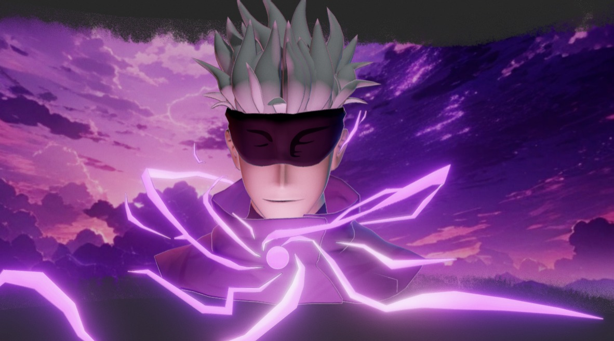
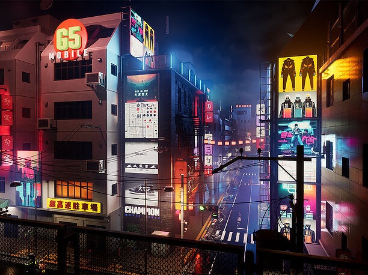

Meet the Characters
Before you step into this world of Jujutsu Sorcery, get to know the characters who will guide, challenge, and fight alongside you. Each character comes with unique abilities, strengths, and storylines that shape the game's world.

Satoru Gojo – The Strongest Sorcerer
With nearly unstoppable cursed techniques, Gojo is a fan favorite. His mastery of the Limitless Technique and his iconic Infinity ability make him a formidable ally or opponent. As Gojo, players can experience god-like powers with immense destructive potential.
- Infinity
- Hollow Purple
- Domain Expansion: Unlimited Void
Yuji Itadori – The Vessel of Sukuna
As the protagonist, Yuji’s strength lies in his heart and relentless willpower. Unwillingly becoming the vessel for Ryomen Sukuna, the King of Curses, Yuji must balance his humanity with Sukuna's overwhelming power. In the game, you’ll master Yuji’s evolving cursed techniques as you fight for control of his fate.
- Black Flash
- Divergent Fist
- Sukuna’s Power (Unleash under certain conditions)

Nobara Kugisaki – The Cursed Tool Wielder
Bold and unrelenting, Nobara brings her unique style of combat with cursed tools and the Straw Doll Technique. As a player, you can use her abilities to deliver ranged attacks and clever traps against enemies, all while staying true to her fiery spirit.
- Straw Doll Technique
- Hairpin
- Resonance
Explore the Cursed World of Sorcery

Step into an expansive, dangerous, and mystical world where cursed energy flows through every corner. The game’s world is inspired by the rich, supernatural universe of Jujutsu Kaisen, blending both familiar and brand-new locations for players to explore, battle, and uncover secrets.
Key Locations
Tokyo Jujutsu High: The prestigious institution where sorcerers are trained, Tokyo Jujutsu High is a hub of activity in the game. Here, players will meet key characters, receive missions, and uncover lore about the sorcerer world. The high school acts as a safe zone where players can upgrade their skills, manage their cursed techniques, and engage in PvE and PvP training.
- Training Grounds: Test your cursed techniques and abilities against fellow sorcerers or AI opponents.
- Mission Hub: Take on story-driven quests or daily challenges that will guide your journey through the cursed world.
Cursed Zones: These are dangerous areas tainted with cursed energy, where cursed spirits roam freely. Cursed Zones are high-risk, high-reward locations filled with puzzles, boss fights, and hidden treasures. Each zone has its unique environment, cursed spirits, and lore waiting to be uncovered.
- Shibuya District: After the devastating events of the Shibuya Incident, the district is now a high-level cursed zone filled with powerful cursed spirits and decaying urban landscapes. It’s a must-explore area for those seeking intense battles.
- Forest of Shadows: A dark, eerie location where players must navigate through twisted forests filled with traps and lurking enemies. Perfect for players who prefer stealth and strategy.